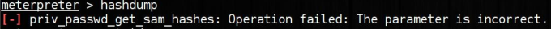

hashdump (metasploit)
The meterpreter hashdump command
The hashdump command is an in-memory version of “pwdump”. Hashdump allocates memory inside a process with administrator or local SYSTEM privileges (usually LSASS process), injects assembly code, and executes it using the CreateThread() function. The injected assembly code of hashdump runs from the within the memory of the exploited process.
No files are written to disk, thus detecting the technique without using memory forensic techniques is difficult.
hashdump #from meterpreter
The difference between "hashdump" and "run hashdump" is that "run hashdump" command executes The
Smart Hashdump Module of Meterpreter.
Smart_hashdump is better, it take in consideration also the simple hashdump.
It looks in the file system, pulling the data from the Windows Registry. If the hashes are encrypted in the file system using Windows Syskey, this script attempts to recover the Syskey from the Registry as well and decrypt the hashes so that they can be used or cracked .
The caveat is that a SYSTEM token is required to use the technique. An account in the local administrators group does not have read access to the SAM registry tree that contains the hashes. If you have exploited a system service, or perhaps something like a DCERPC vulnerability, you are in great shape. Alternatively you can consider migrating your meterpreter to a service process, or load the incognito module, and impersonate a token
meterrpreter> run post/windows/gather/hashdump.rb
: In January, 2010, HD Moore noted that Anti-Virus, and host intrusion prevention (HIPS) vendors had developed techniques to detect the API calls made by the meterpreter hashdump command, and block the calls. In the process of detection however, LSASS will often crash leading to system instability.
We have covered how to exploit and recover Hashes in a network with Windows machine here →
LM/NTLMv1 Attack ←
ERROR: "Operation failed: The parameter is incorrect"If hashdump return an error like this:
we can try to
migrate to a different process and retry with “run hashdump” aka smart_hashdump that is better